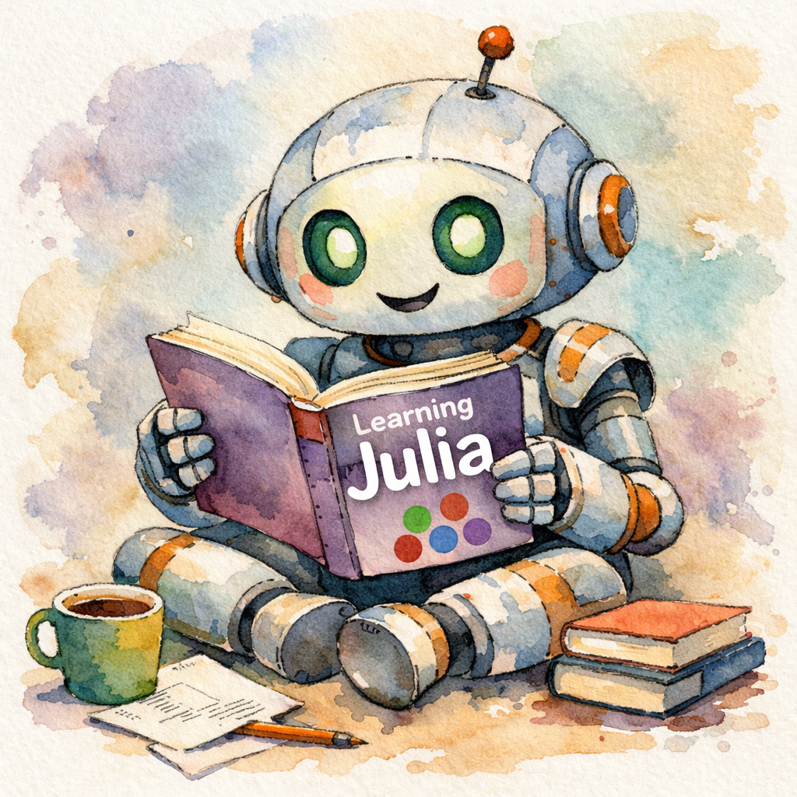

UniLM.jl
A unified Julia interface for large language models.


What is UniLM.jl?
UniLM.jl provides a Julian, type-safe interface to OpenAI's language models — covering both the classic Chat Completions API, the newer Responses API, and the Image Generation API. It aims to become a unified solution for accessing multiple LLM providers from Julia.
Key Features
- 🗣️ Chat Completions — stateful conversations with automatic history management
- 🔮 Responses API — OpenAI's newer API with built-in tools, multi-turn chaining, and reasoning
- 🖼️ Image Generation — create images from text prompts with
gpt-image-1.5 - 🔧 Tool/Function Calling — first-class support for function tools in both APIs
- 📊 Embeddings — text embedding generation
- 🌊 Streaming — real-time token streaming with
do-block syntax - 📐 Structured Output — JSON Schema–constrained generation
- ☁️ Multi-Backend — OpenAI, Azure OpenAI, and Google Gemini
- ✅ Type Safety — invalid states are unrepresentable; tested with JET.jl and Aqua.jl
Two APIs, One Package
| Feature | Chat Completions | Responses API |
|---|---|---|
| Stateful conversations | Chat + push! | previous_response_id |
| System prompt | Message(Val(:system), ...) | instructions kwarg |
| Tool calling | GPTTool / GPTToolCall | FunctionTool / function_tool |
| Web search | ✗ | WebSearchTool |
| File search | ✗ | FileSearchTool |
| Streaming | stream=true + callback | do-block syntax |
| Structured output | ResponseFormat | TextConfig / json_schema_format |
| Reasoning (O-series) | ✗ | Reasoning |
Installation
using Pkg
Pkg.add(url="https://github.com/algunion/UniLM.jl")Or in the Pkg REPL:
pkg> add https://github.com/algunion/UniLM.jlQuick Example
Building requests — these construct objects locally without calling the API:
using UniLM
using JSON
# Chat Completions request
chat = Chat(model="gpt-5.2")
push!(chat, Message(Val(:system), "You are a Julia expert."))
push!(chat, Message(Val(:user), "Explain multiple dispatch in one sentence."))
println("Chat has ", length(chat), " messages, model: ", chat.model)
println("Request body preview:")
println(JSON.json(chat))Chat has 2 messages, model: gpt-5.2
Request body preview:
{"messages":[{"role":"system","content":"You are a Julia expert."},{"role":"user","content":"Explain multiple dispatch in one sentence."}],"model":"gpt-5.2"}# Responses API request
r = Respond(input="What makes Julia special?")
println("Respond model: ", r.model)
println(JSON.json(r))Respond model: gpt-5.2
{"model":"gpt-5.2","input":"What makes Julia special?"}# Image Generation request
ig = ImageGeneration(prompt="A watercolor Julia logo", quality="high")
println("Image model: ", ig.model)
println(JSON.json(ig))Image model: gpt-image-1.5
{"quality":"high","prompt":"A watercolor Julia logo","model":"gpt-image-1.5"}With a valid API key, actual API calls return structured results:
Responses API (recommended for new code):
result = respond("Explain Julia's multiple dispatch in 2-3 sentences.")
if result isa ResponseSuccess
println(output_text(result))
else
println("Request failed — ", output_text(result))
endJulia uses *multiple dispatch*, meaning the method that runs is chosen based on the types of **all** arguments to a function, not just the first one. This lets you write generic functions and then add specialized methods for different type combinations, so the most specific applicable method is picked automatically at runtime (with performance typically optimized by the compiler).Chat Completions:
chat = Chat(model="gpt-4o-mini")
push!(chat, Message(Val(:system), "You are a concise Julia programming tutor."))
push!(chat, Message(Val(:user), "What is multiple dispatch? Answer in 2-3 sentences."))
result = chatrequest!(chat)
if result isa LLMSuccess
println(result.message.content)
else
println("Request failed — see result for details")
endMultiple dispatch is a programming paradigm that selects a method to execute based on the types of all its arguments rather than just the first one. In Julia, this allows for more dynamic and flexible function overloading, enabling efficient code that can adapt to different input types, improving both performance and code clarity.Image Generation:
result = generate_image(
"A watercolor painting of a friendly robot reading a Julia programming book",
size="1024x1024", quality="medium"
)
println("Success: ", result isa ImageSuccess)
if result isa ImageSuccess
save_image(image_data(result)[1], joinpath(@__DIR__, "assets", "generated_robot.png"))
println("Saved to assets/generated_robot.png")
else
println("Image generation failed — see result for details")
endSuccess: true
Saved to assets/generated_robot.png
Next Steps
- Getting Started — setup and first requests
- Chat Completions Guide — deep dive into
Chatandchatrequest! - Responses API Guide — the newer Responses API
- Image Generation Guide — create images from text prompts
- API Reference — full type and function reference